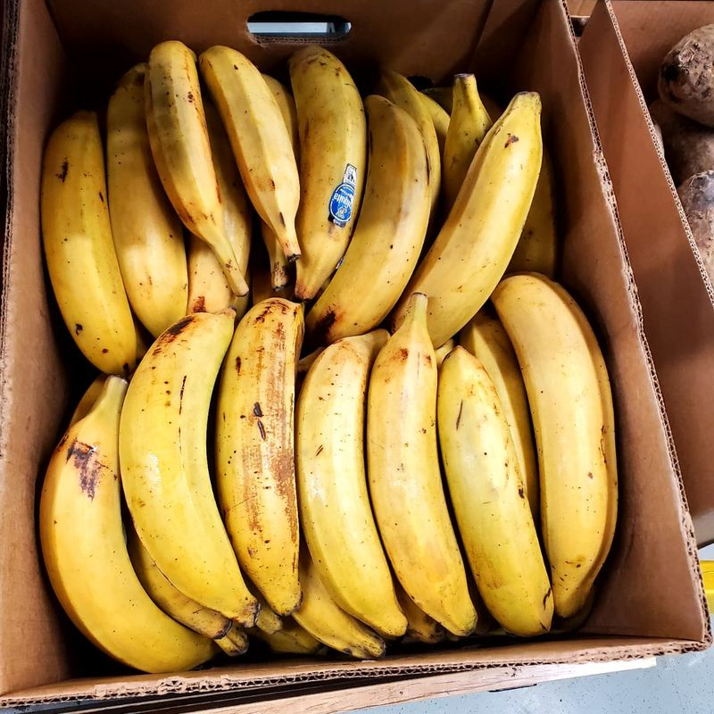
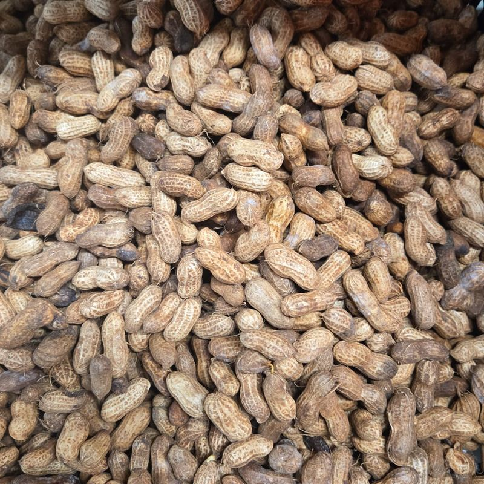

Recipes
Cook the world, step by step
Dishes from Africa and the Caribbean, explained simply. Every ingredient is in store: one click takes you to the product in the shop.
 CameroonNdolé with shrimp1 h 30
CameroonNdolé with shrimp1 h 30
 Côte d’IvoireAttiéké with grilled fish45 min
Côte d’IvoireAttiéké with grilled fish45 min
 DR CongoPondu (saka-saka)2 h
DR CongoPondu (saka-saka)2 h
 NigeriaEgusi soup with fufu1 h
NigeriaEgusi soup with fufu1 h
 West AfricaOkra soup with eba50 min
West AfricaOkra soup with eba50 min

Côte d’IvoireAlloco (fried plantains)20 min HaitiGriot with bananes pesées2 h (plus marinating)
HaitiGriot with bananes pesées2 h (plus marinating)
 CameroonPoulet DG1 h 15
CameroonPoulet DG1 h 15

Senegal and MaliMafé (peanut stew)1 h 15
Cameroon
Ndolé with shrimp
Cameroon’s national dish: tender ndolé leaves in a creamy peanut sauce, with shrimp and meat.
- Time : 1 h 30
- Serves : 6 people
Ingredients
- 500 g ndolé leaves (frozen or dried)Find in the shop →
- 500 g raw shelled peanutsFind in the shop →
- 500 g beef, cut into piecesFind in the shop →
- 200 g dried or smoked shrimpFind in the shop →
- 2 onions and 4 garlic clovesFind in the shop →
- 1 piece of gingerFind in the shop →
- 15 cl peanut oilFind in the shop →
- Salt, pepper, 1 stock cubeFind in the shop →
Method
- Boil the peanuts for 15 minutes, drain and blend with a little water into a smooth paste.
- Cook the meat with one onion, the garlic, ginger, salt and stock cube for about 45 minutes, until tender.
- Rinse the ndolé leaves several times (boil them for 10 minutes if dried) to remove the bitterness.
- Add the peanut paste to the meat broth and simmer for 20 minutes over low heat, stirring.
- Stir in the ndolé leaves and shrimp, then simmer for 15 minutes.
- Fry the second onion, sliced, in the hot oil and pour it over the ndolé just before serving.
- Serve with fried ripe plantain, cassava sticks (bobolo, miondo) or rice.
Côte d’Ivoire
Attiéké with grilled fish
An Abidjan street-food classic: marinated grilled fish served with attiéké and a fresh chili sauce.
- Time : 45 min
- Serves : 4 people
Ingredients
- 1 kg attiékéFind in the shop →
- 2 whole fish (tilapia, mackerel or sea bass)Find in the shop →
- 3 tomatoes and 2 onionsFind in the shop →
- 1 to 2 fresh chiliesFind in the shop →
- 1 piece of ginger and 3 garlic clovesFind in the shop →
- Oil, salt, stock cube, lemon juiceFind in the shop →
Method
- Scale and gut the fish, then score both sides.
- Blend the garlic, ginger, half an onion, a little chili, the stock cube, salt and oil, and brush it over the fish. Marinate for 30 minutes.
- Grill the fish on the barbecue or in the oven (220 °C) for about 12 minutes per side.
- Finely chop the tomatoes, onions and chili, and season with salt, lemon and a drizzle of oil.
- Reheat the attiéké by steaming or in the microwave, fluffing it with a fork.
- Serve the fish on the attiéké with the fresh sauce and, if you like, alloco.
DR Congo
Pondu (saka-saka)
Pounded cassava leaves slowly simmered with palm oil, onion and salted fish.
- Time : 2 h
- Serves : 6 people
Ingredients
- 1 kg pondu (frozen pounded cassava leaves)Find in the shop →
- 300 g salted or smoked fishFind in the shop →
- 15 cl red palm oilFind in the shop →
- 2 onions, 3 garlic clovesFind in the shop →
- 1 eggplant or a few okra (optional)Find in the shop →
- Salt, chili, stock cubeFind in the shop →
Method
- Soak the salted fish for a few hours to remove the salt, then flake it.
- Put the pondu in a large pot, cover with water and cook over medium heat for at least 1 hour, adding water as needed.
- Add the chopped onions and garlic, the fish and the eggplant, then cook for 30 minutes.
- Pour in the palm oil, add salt, chili and the stock cube. Simmer for another 20 minutes, until the water is almost absorbed.
- Serve with fufu, chikwangue or rice.
Nigeria
Egusi soup with fufu
A thick sauce of ground melon seeds, leafy greens and meat, served with fufu or pounded yam.
- Time : 1 h
- Serves : 6 people
Ingredients
- 300 g ground egusi seedsFind in the shop →
- 500 g meat (beef, goat) and some smoked fishFind in the shop →
- 200 g spinach or bitter leavesFind in the shop →
- 15 cl red palm oilFind in the shop →
- 2 onions, chili, ground dried shrimpFind in the shop →
- Fufu flour or pounded yam flour to serveFind in the shop →
Method
- Cook the meat with one onion, salt and stock cube until tender; keep the broth.
- Mix the ground egusi with one blended onion and a little water to form a paste.
- Heat the palm oil and fry the egusi paste for 10 minutes, stirring, until it forms small curds.
- Add the broth, meat, smoked fish, shrimp and chili. Simmer for 20 minutes.
- Add the sliced greens and cook for another 5 minutes.
- Make the fufu: pour the flour into boiling water and stir vigorously until you get a smooth, firm dough. Serve with the soup.
West Africa
Okra soup with eba
A silky okra sauce with smoked fish and palm oil, served with eba (gari dough).
- Time : 50 min
- Serves : 4 people
Ingredients
- 500 g fresh or frozen okraFind in the shop →
- 300 g smoked fish and 300 g meatFind in the shop →
- 10 cl red palm oilFind in the shop →
- 1 onion, chili, dried shrimpFind in the shop →
- 500 g gari for the ebaFind in the shop →
Method
- Cook the meat with the onion, salt and stock cube; keep the broth.
- Cut the okra into thin slices (or grate it).
- Add the palm oil, flaked smoked fish, shrimp and chili to the broth. Cook for 10 minutes.
- Add the okra and cook for 5 to 8 minutes over low heat, uncovered, so it stays green and silky.
- For the eba: pour the gari into boiling water off the heat, let it swell for a minute, then work it with a spatula into a firm dough.
Côte d’Ivoire
Alloco (fried plantains)
Very ripe plantains fried until golden and caramelized, served with fish, eggs or a spicy sauce.
- Time : 20 min
- Serves : 4 people
Ingredients
- 4 very ripe plantains (yellow skin with black spots)Find in the shop →
- Peanut oil for fryingFind in the shop →
- Salt, chili and onion for the sauceFind in the shop →
Method
- Peel the plantains and cut them into rounds or diagonal chunks.
- Salt lightly.
- Fry in hot oil (170 °C) for 3 to 4 minutes, until nicely golden.
- Drain on paper towels and serve hot with a chili, onion and tomato sauce.
Haiti
Griot with bananes pesées
Haiti’s festive dish: pork marinated in citrus and epis, simmered then fried, served with flattened fried green plantains.
- Time : 2 h (plus marinating)
- Serves : 6 people
Ingredients
- 1.5 kg pork shoulder, cubedFind in the shop →
- Juice of 2 sour oranges (or oranges and limes)Find in the shop →
- Epis: parsley, thyme, garlic, green onion, scotch bonnet pepperFind in the shop →
- 3 green plantainsFind in the shop →
- Oil for fryingFind in the shop →
Method
- Wash the pork with the citrus juice, then marinate it with the blended epis for at least 4 hours (ideally overnight).
- Cook the pork with its marinade and a little water, covered, for 1 hour, then uncovered until the liquid evaporates.
- Fry the pork pieces in hot oil until well browned.
- Peel the green plantains, cut them into chunks and fry for 4 minutes.
- Flatten them between two boards, then fry again until crispy.
- Serve the griot with the bananes pesées and pikliz (spicy pickled cabbage and carrots).
Cameroon
Poulet DG
“Director General” chicken: fried chicken simmered with ripe plantains, carrots, green beans and peppers.
- Time : 1 h 15
- Serves : 6 people
Ingredients
- 1 chicken, cut into piecesFind in the shop →
- 4 ripe plantainsFind in the shop →
- 3 carrots, 200 g green beans, 2 bell peppersFind in the shop →
- 2 tomatoes, 2 onions, garlic, gingerFind in the shop →
- Oil, salt, pepper, stock cubeFind in the shop →
Method
- Season the chicken with garlic, ginger, salt and stock cube, and brown it in oil.
- Slice the plantains into rounds and fry them; set aside.
- In the same oil, sauté the onions, tomatoes, carrots and green beans for 10 minutes.
- Add the chicken and a glass of water, and simmer for 25 minutes.
- Add the peppers and fried plantains, stir gently and cook for another 10 minutes.
Senegal and Mali
Mafé (peanut stew)
A comforting stew of meat and vegetables in a peanut and tomato sauce, served with rice.
- Time : 1 h 15
- Serves : 6 people
Ingredients
- 1 kg beef, lamb or chickenFind in the shop →
- 250 g peanut pasteFind in the shop →
- 2 tbsp tomato pasteFind in the shop →
- 2 onions, 3 garlic cloves, 1 chiliFind in the shop →
- Carrots, sweet potato, cabbage or cassavaFind in the shop →
- Rice to serveFind in the shop →
Method
- Brown the meat in a little oil with the onions and garlic.
- Add the tomato paste and cook for 5 minutes.
- Dissolve the peanut paste in one litre of hot water and pour over the meat.
- Add the vegetables in large pieces, the whole chili, salt and stock cube.
- Simmer over low heat for 45 minutes, stirring now and then, until the oil rises to the surface.
- Serve with white rice.